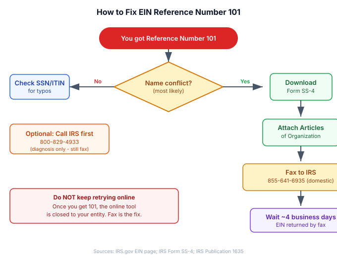

The short version
TL;DR: IRS EIN Reference Number 101 means the IRS found a business name too similar to yours. Your online EIN application is blocked. Download Form SS-4, attach your Articles of Organization, and fax it to 855-641-6935. You will get your EIN in about 4 business days.Last updated: 2026-08-18
What Reference Number 101 Means
You filled out the IRS online EIN application, hit submit, and got this instead of an EIN: "We are unable to provide you with an EIN. We apologize for the inconvenience, but based on the information provided we are unable to provide you with an EIN through this online assistant." Then a screen with Reference Number 101.
Here is the short version: the IRS online system detected that a business with a similar name already exists in their database. Your LLC name may be unique in your home state, but another entity in a different state has a name the IRS considers too close. The online tool is not equipped to resolve naming conflicts. It simply blocks you and tells you to apply another way.
Reference Number 101 is the single most common EIN application error. According to LLC University's breakdown of IRS reference codes, it accounts for more failed online EIN attempts than any other code. The good news: it has a clear fix, and it is not a rejection of your application.
Why You Got This Error
The IRS maintains a nationwide database of business names. When you apply online, the system cross-checks your proposed name against every registered entity in every state. If it finds a match or a near-match, it triggers Reference Number 101.
Common causes include:
- Name similarity across states. Two LLCs can have the same name in different states. Your state approved it, but the IRS sees the conflict.
- DBA or trade name overlap. If you entered a trade name (DBA) on the application that matches an existing entity, the system flags it.
- Recent name changes or entity conversions. If another business recently changed its name to something similar, the IRS database may not have fully synced.
- Incomplete or incorrect entity information. Entering a business name that does not match your state filing documents can also trigger this code.
The IRS does not publish a full list of every reason Reference Number 101 fires. What they do confirm is that it means the online tool cannot process your application. You need a manual review.
How to Fix Reference Number 101 (Step by Step)
The online EIN application is closed to your entity once you receive Reference Number 101. Do not keep retrying online. The fix is to apply offline using Form SS-4.
Step 1: Download Form SS-4
Go to IRS.gov and download Form SS-4 (Application for Employer Identification Number). The form is a fillable PDF. Print it out or fill it electronically and print.
Step 2: Gather Your Supporting Documents
You will need:
- Approved Articles of Organization (or Certificate of Organization / Certificate of Formation, depending on your state). This is the document your Secretary of State issued when you formed your LLC.
- Completed Form SS-4 with your business name, entity type, responsible party information, and reason for applying.
Make sure the business name on Form SS-4 matches exactly what appears on your Articles of Organization. Do not abbreviate, do not add or remove punctuation, and do not use a DBA unless that is the name on your formation documents.
Step 3: Fax Form SS-4 to the IRS
Fax your completed Form SS-4 and a copy of your Articles of Organization to:
- Domestic fax (50 states + DC): 855-641-6935
- International fax (within U.S.): 855-215-1627
- International fax (outside U.S.): 304-707-9471
Include your fax number on the form so the IRS can fax your EIN confirmation back to you.
Step 4: Wait for Your EIN
After faxing, expect your EIN in approximately 4 business days. The IRS will fax back a cover sheet with your assigned EIN. If you need to mail Form SS-4 instead, allow 4 to 6 weeks for processing.
Mailing address (domestic):
Internal Revenue Service
Attn: EIN Operation
Cincinnati, OH 45999

What If You Do Not Have an SSN or ITIN?
The IRS online EIN application requires a valid SSN or ITIN from the responsible party. If you are a non-U.S. founder without either number, you cannot use the online tool regardless of whether you got Reference Number 101.
You will need to apply by phone, fax, or mail using Form SS-4. International applicants can call the IRS directly at 267-941-1099 (Monday through Friday, 6:00 AM to 11:00 PM Eastern) to obtain an EIN over the phone.
If the paperwork and IRS coordination feel overwhelming, a formation service can handle it for you. doola specializes in EIN applications for non-U.S. founders. They handle the Form SS-4 filing, coordinate with the IRS, and deliver your EIN confirmation. Check doola's pricing for current rates.
Common Mistakes That Make This Worse
Reference Number 101 itself is not harmful. But applicants sometimes make it harder to resolve by doing the following:
- Retrying the online application repeatedly. The online tool will not work for your entity after a 101. Each retry wastes your time.
- Filing Form SS-4 with a different name. If the name on your SS-4 does not match your Articles of Organization, the IRS may issue a different reference number or request additional information, adding weeks to the process.
- Forgetting to attach formation documents. Form SS-4 alone may not be enough when the IRS flagged a name conflict. Including your Articles of Organization gives the reviewer what they need to approve the application quickly.
- Not including a fax number. If you fax Form SS-4 without a fax number, the IRS will mail your EIN confirmation, which takes 4 to 6 weeks instead of 4 business days.
How Long Does Resolution Take?
From the moment you fax Form SS-4 with your Articles of Organization, most applicants receive their EIN within 4 business days. Mailed applications take 4 to 6 weeks. Phone applications (international applicants only) are typically assigned the EIN during the call.
If the IRS needs additional information after reviewing your faxed application, they will contact you. This can add 1 to 2 weeks depending on the issue.
When to Call the IRS
You do not need to call the IRS to resolve Reference Number 101. The fax process is the fix. But if you want to confirm the reason for the error or check the status of a faxed application, call the IRS Business & Specialty Tax Line:
- Phone: 800-829-4933
- Hours: Monday through Friday, 7:00 AM to 7:00 PM (local time)
- Tip: Press option 1, then 1, then 3 to reach an operator
Call early in the morning for the shortest hold times. During peak periods, hold times can exceed 60 minutes.
Recap Checklist
- Reference Number 101 means a name conflict was detected. Your online application is blocked.
- Download and complete Form SS-4.
- Attach your approved Articles of Organization (or equivalent state filing).
- Fax to 855-641-6935 (domestic) with your fax number included.
- Expect your EIN in about 4 business days.
- For non-U.S. founders without an SSN or ITIN, call 267-941-1099 or use doola to handle the process.
Frequently Asked Questions
Does Reference Number 101 mean my LLC name is rejected?
No. Reference Number 101 does not affect your state-level LLC registration. Your Articles of Organization are still valid. The error only means the IRS online EIN system detected a name conflict and cannot process your application through the automated tool. You still get an EIN through the manual Form SS-4 process.
Can I change my LLC name to avoid Reference Number 101?
You can, but you do not need to. Changing your LLC name requires filing Articles of Amendment with your state, paying a fee, and waiting for approval. It is usually faster and simpler to just file Form SS-4 and let the IRS manually review your existing name. The manual review process exists precisely for situations like this.
How long after faxing Form SS-4 will I get my EIN?
Approximately 4 business days. The IRS will fax back a cover sheet with your EIN number. If you do not include a fax number on Form SS-4, they will mail the confirmation, which takes 4 to 6 weeks.
What if I also got Reference Number 101 and another error?
If you received multiple reference numbers, the same fix applies: file Form SS-4 by fax or mail. The manual review process addresses all flagged issues at once. Include your Articles of Organization and any other relevant formation documents.
Is there a fee to apply for an EIN?
No. The IRS does not charge a fee for EIN applications. If a website asks you to pay for an EIN, it is a third-party service charging for assistance, not for the EIN itself. You can always apply directly through the IRS for free at IRS.gov.
Do I need an EIN for my single-member LLC?
It depends. If you have employees or owe excise taxes, yes. If you are forming a single-member LLC without employees, you can use your personal SSN for tax filing. However, most LLC owners get an EIN anyway because banks require one to open a business account, and it keeps your SSN off vendor and client documents. You can read more in our guide on how to get an EIN.